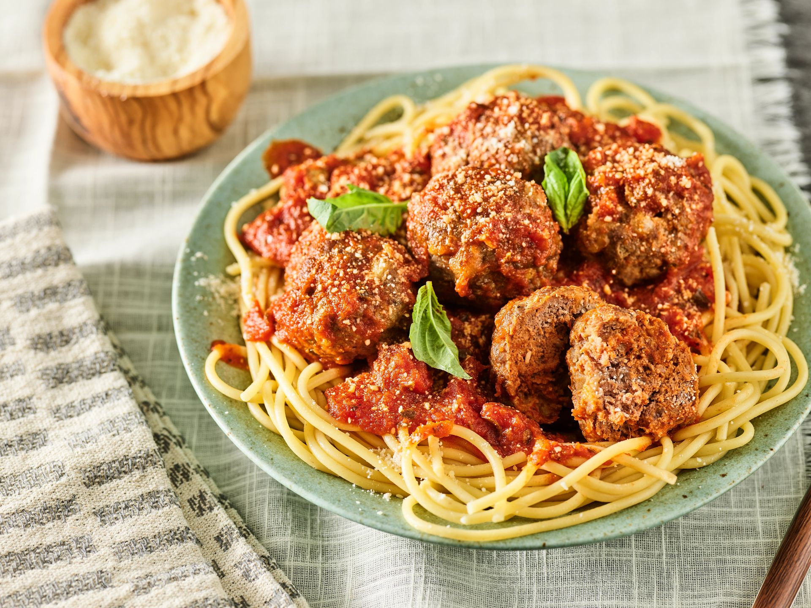

Home
Spaghetti and Meatballs Recipe

What Is Spaghetti and Meatballs?
Spaghetti and Meatballs is as simple as it sounds: it's spaghetti, a pasta, topped with meatballs made from ground meat, a binder, seasonings, and breadcrumbs. The meatballs are usually covered with a delicious tomato sauce. Here is my recipe for meatballs that is sure to knock your socks off!
Ingredients for Spaghetti and Meatballs:
- Dried or Fresh Spaghetti Noodles
- Store-Bought Jarred Marinara Sauce
- Ground Beef
- Ground Pork
- Basil
- Parmesan Cheese
- Italian Seasoning Blend
- One egg
- Garlic
How to Make Spaghetti and Meatballs:
- Mince garlic and basil. Add to a large bowl along with the egg, salt, pepper, and some italian seasoning blend. Mix to combine.
- Add ground beef, ground pork, breadcrumbs, and parmesan cheese to the bowl. Mix with hands to combine. Be careful not to overwork the mixture.
- Shape the mixture into golf ball-sized meatballs. Place meatballs on a baking sheet.
- After preheating oven to 350F, add meatballs to oven and bake for 20 mins, turning them over halfway through the cook.
- While meatballs cook, boil water, and add salt and pasta to water. Cook for length indicated on package.
- Using a small saucepan on medium-low heat, add jarred tomato sauce along with some diced basil and italian seasoning. Bring to a gentle simmer to allow flavors to combine.
- Drain pasta, and serve with meatballs, sauce, and parmesan cheese on top.
Dig In and Enjoy!
Thank you for checking out my lasagna recipe. If you enjoyed this recipe, you can check out my other recipes here.